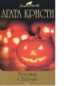

В романе "Третья" Эркюлю Пуаро придется искать не убийцу, а... убийство. Ибо некая испуганная молодая девушка сообщает великому сыщику, что, как ей кажется, она убила человека. Но при этом нервная барышня не может вспомнить ни имени жертвы, ни обстоятельств убийства, ни места преступления. В романе "Вечеринка в Хэллоуин" судьба вновь сведет Эркюля Пуаро с писательницей Ариадной Оливер (многие склонны полагать, что под этим именем миссис Агата выводила в своих книгах саму себя). Великому сыщику и знаменитой писательнице предстоит расследовать убийство тринадцатилетней девочки.